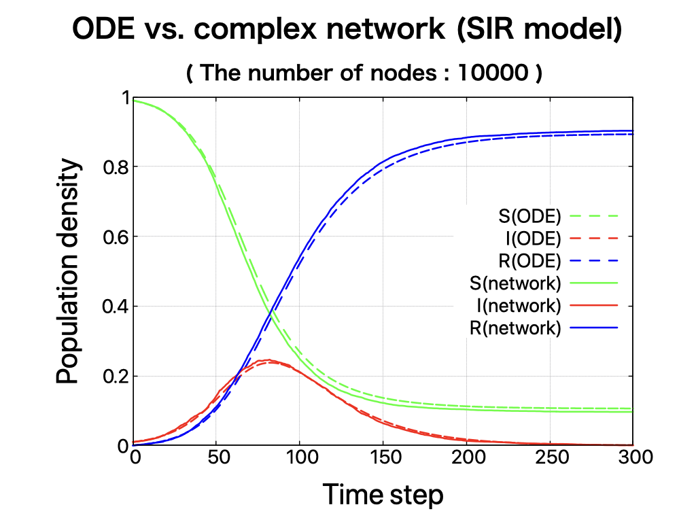
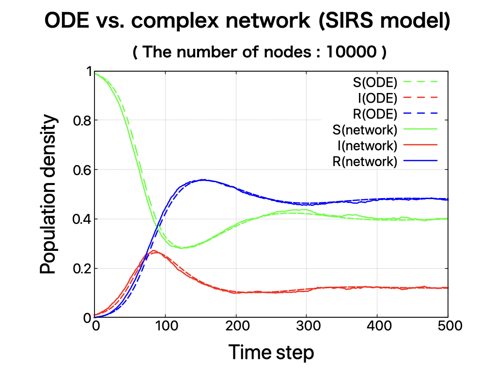

複雑ネットワーク上の感染症モデル
複雑ネットワーク（complex network）は点（node、vertex）と辺（edge、link）から構成されています。
辺で繋がっている点と点の相互作用を考え、それが多数になると全体の挙動がどうなるかを調べます。

感染症は単に感染者と免疫を持たない非感染者がつながっていると非感染者も感染者になるというイメージです。 感染者も次の時間にある確率で回復者になります。点の数が２，３個ならこれだけのことです。 しかし点の数が1万や10万個になったら全体的な感染者の増減はどうなるでしょう。 このように部分的には単純な機構が、多数集まるとどのような挙動を示すかを調べることが統計物理学の対象になります。 以下のようなアルゴリズムを考えてみます。 各nodeは未感染者、感染者、回復者の内のいずれかを表すとし、edgeで任意に接続されたネットワークを構成している。 |
\(S + I \to 2S\) (\(確率\beta\))
\(I \to R\) (\(確率\gamma\))
|
STEP1: 未感染者S、感染者I、回復者Rをnodeとし、任意に接続されたネットワーク上にランダムに配置する。
STEP2: ネットワーク上の一つのノードを選び、もしそれが 未感染者Sならばそのnodeにつながる別のnodeを一つ選び、 それがもし感染者Iならば、確率βで初めに選んだnodeを感染者Iに変える。 感染者Iならば、γの確率でそのnodeを回復者Rに変える。 （SIRS モデルのみ）回復者Rならば確率μでそのnodeを未感染者Sに変える。 STEP3: STEP2をネットワーク上の全node数だけ行い、それを1 Time stepとする。 STEP4: STEP2とSTEP3を任意のTime step回実行する。 |
| 10000個のnodeを用いて、全てのnodeがedgeで結ばれた完全グラフで上記のアルゴリズムを行った結果が図です。 常微分方程式（Ordinary Differntial Equation, ODE）のSIRモデルやSIRSモデルの結果と良い一致が見られます。 |
SIR モデル
\begin{equation} \begin{cases} \frac{dS}{dt}=-\beta SI \\ \frac{dI}{dt}= \beta SI -\gamma I \\ \frac{dR}{dt}= \gamma I \end{cases} \end{equation} 
SIRS モデル
\begin{equation} \begin{cases} \frac{dS}{dt}=-\beta SI \\ \frac{dI}{dt}= \beta SI - \gamma I \\ \frac{dR}{dt}= \gamma I - \mu R \end{cases} \end{equation} 
|
|